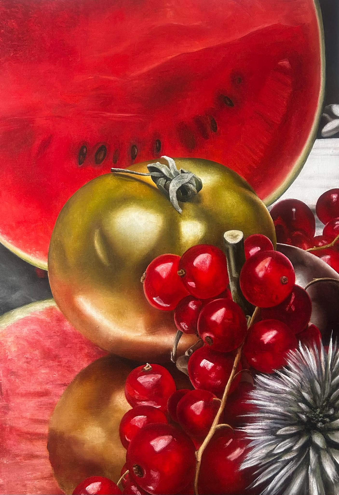

Nature
En compagnie d'une tomate verte
- Technique
- Huile sur Toile
- Dimensions
- 116 × 81 cm
- Année
- 2025
- Disponibilité
- Disponible
- Où la voir
- atelier
« En compagnie d'une tomate verte » est une œuvre d’Annick Bouvattier, réalisée en 2025 (huile sur toile, 116 × 81 cm). Elle fait partie de la collection « Nature ». Cette œuvre est disponible.
“En compagnie d'une tomate verte” is a work by Annick Bouvattier, created in 2025 (oil on canvas, 116 × 81 cm). It belongs to the “Nature” collection. This work is available.
«En compagnie d'une tomate verte» es una obra de Annick Bouvattier, realizada en 2025 (óleo sobre lienzo, 116 × 81 cm). Forma parte de la colección «Naturaleza». Esta obra está disponible.
«En compagnie d'une tomate verte» è un'opera di Annick Bouvattier, realizzata nel 2025 (olio su tela, 116 × 81 cm). Fa parte della collezione «Natura». Quest'opera è disponibile.
Demander des informations